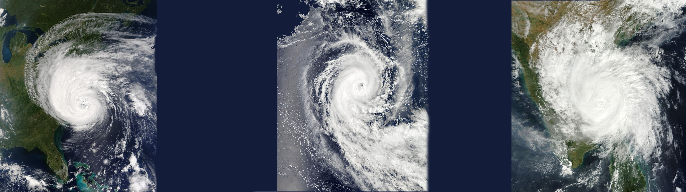
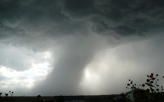

|  | Meteorology |
|---|
| Most of my free time has been spent looking at the weather, whether it's tropical tidbits, the national hurricane center, or radar. It fascinates me how weather patterns form and how people are able to predict it. Weather is what allows us to live in certain places and predicting it can save so many lives. There is so much to learn in this field of science and I am looking forward to every bit of it. |  | |
|---|---|---|